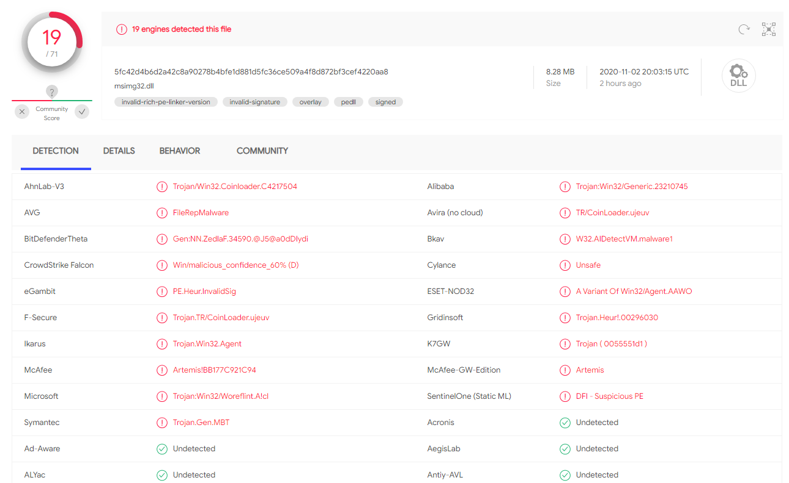
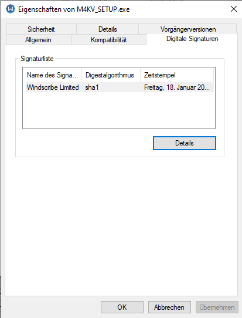
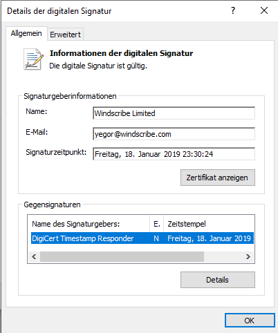
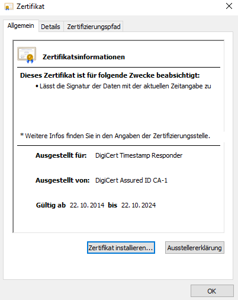
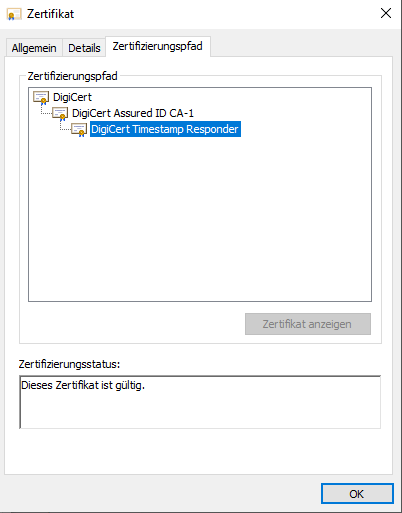
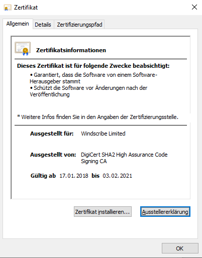
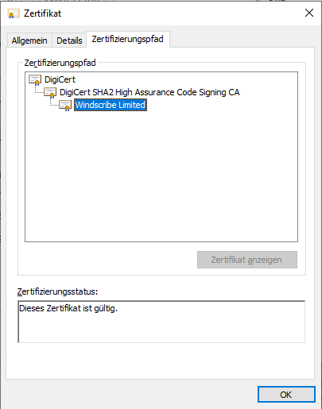

Malware-Frage
Ich habe hier eine Datei im Internet gefunden, wozu VirusTotal folgendes sagt:

Schauen wir uns die Datei mal genauer an. Ein gültiges Zertifikat hat diese nämlich:

Windscribe... Was ist das wohl.

Windscribe scheint ein VPN Anbieter zu sein... Und dieses Zertifikat scheint auch gültig zu sein...

Aha. Und auch alles gesigned von DigiCert... Schauen wir uns mal das Windscribe Zertifikat noch mal an...

Und das hier ist jetzt gesigned von DigiCert Code Signing? Kann ich mir selber ein Zertifikat ausstellen lassen zu einer E-Mail-Adresse, auf die ich gar keinen Zugriff habe oder die gar nicht existiert? Wird das nicht geprüft?